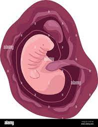

You might have noticed some changes in your body and started to wonder, “Could I be … pregnant!?” Or, you might not have observed any signs of pregnancy other than your period being late. If you have your suspicions, you'll probably want to take a home pregnancy test. If the result is positive, congratulations! Read on to find out more about early pregnancy symptoms, how your baby is developing when you’re one month pregnant, and what else is in store for you this month.
At one month pregnant, you may not experience many — or any — symptoms. However, some of the early signs of pregnancy at one month pregnant can include:
If you have a regular menstrual cycle, this is perhaps the most telling sign of pregnancy. You might first suspect you could be pregnant when your period is late, and then when it never arrives at all.
When you become pregnant, your hormone levels start to rise dramatically, and this can sometimes leave you feeling more emotional than usual. It’s also common to experience a range of moods — anything from being anxious and overwhelmed to feeling excited and ecstatic — when you find out you are pregnant. Talk to your loved ones about your feelings, and talk to your healthcare provider if you have any concerns.
The surge of pregnancy hormones can lead to bloating, which you might even mistake for a normal symptom of PMS. Eating more fiber and getting regular exercise can help relieve bloating.
Some moms-to-be get light uterine cramping in the early days and weeks of pregnancy. These sensations can sometimes feel like menstrual cramps, so you might think you're about to get your period. If cramps are painful or are bothering you, ask your healthcare provider to recommend suitable pain relief options.
If you notice some spots of blood on your underwear, it could be what’s called implantation bleeding. This light spotting can happen when the fertilized egg implants itself in the uterine lining in early pregnancy. Wearing a panty liner can help prevent any accidental leaks or stains.
When you become pregnant, the amount of blood in your body starts increasing. This means your kidneys have to work overtime to process the extra fluid, which then ends up in your bladder. Although some early symptoms of pregnancy may ease up over time, this might not be one of them. Don’t cut back on your fluid intake — it’s important to stay hydrated — but think about trying to pee before you leave your home or any time you might be away from a restroom for any length of time, such as before a meeting or a car trip.
Your breasts may be sensitive or even sore right now, but this symptom may subside in a few weeks as your body gets used to the hormonal changes taking place.
It’s not uncommon to feel a little more tired than usual, and the hormone progesterone may be to blame. Take it easy as much as you can, and know that many moms-to-be experience a burst of energy once they enter the second trimester.
The dreaded morning sickness (nausea with or without vomiting) often doesn’t hit until after the first month of pregnancy, but some moms-to-be may get it a bit sooner, and some lucky women may never experience any queasiness associated with early pregnancy at all. Try to stay hydrated, take a multivitamin, and sip ginger ale or ginger tea to help soothe your stomach.
If you’re feeling a bit blocked up, chalk it up to those rising levels of hormones, which can slow down your digestive system. Prenatal vitamins, which typically contain iron, may also be a factor. Ask your healthcare provider for advice on how to help get things going again.
When you’re newly pregnant, you might find that certain odors and flavors aren’t quite as appealing as they used to be. Feeling nauseous when you encounter certain foods and smells can sometimes go hand in hand with morning sickness. Use a kitchen fan when cooking, and ask your partner to take out the garbage if certain smells start to bother you
After conception, the fertilized egg travels along the fallopian tube to the uterus, where it will implant in the uterine lining. The egg divides into a bunch of cells, some of which become the embryo and some of which eventually become the placenta, which will provide nourishment for your baby during your pregnancy. The umbilical cord also forms between the embryo and the placenta, delivering nutrients and removing waste. The upcoming month is a time of rapid growth for your little one, as internal organs, bones, and tiny limbs are beginning to form. One quick note on the terminology you might see when reading up on baby development: During the first eight weeks, your little one may be referred to as an embryo in medica circles, whereas after this point your baby may be called a fetus until she is born.
At this stage your baby is teeny-tiny, but by the start of the second month of pregnancy your little one will be about ¼ of an inch long – or about the size of a pumpkin seed.
For a glimpse at how your little one might be looking inside your belly at 4 weeks, take a look at this illustration:
You probably won’t be noticing any changes to your body just yet, but that doesn’t mean there isn’t a lot going on under the surface. At this point, it’s important to prepare your body for pregnancy and childbirth by paying attention to your overall health and nutrition. This often means taking a multivitamin supplement to make sure you have all the nutrients you and your little one will need for the months ahead.
Talk to your healthcare provider at your first prenatal visit to make sure you’re getting the right amounts of the right vitamins. It can also be helpful to begin or continue an exercise routine this month. Check in with your provider to make sure your favorite activities are safe during pregnancy, but in general, getting regular exercise can help build the strength and endurance you’ll need throughout your pregnancy.
At one month pregnant, you’re at the start of the first trimester. Though there is no standard way of grouping pregnancy weeks into months (as they don't fit evenly), the first month usually includes week one through week four of pregnancy. The breakdown of weeks into trimesters also varies; here is a common method we'll follow: First trimester: 1 to 13 weeks Second trimester: 14 to 27 weeks Third trimester: 28 to 40 weeks (or until you give birth)